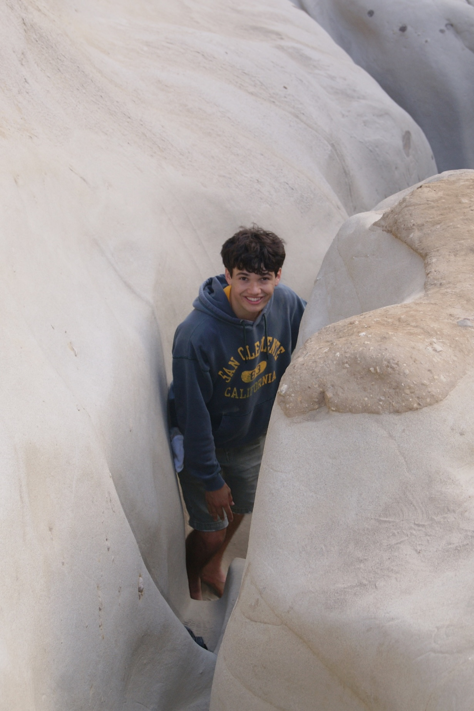

About Me
I am a member of course staff in the Berkeley EECS department, teaching CS61C. I spent this summer developing relevant skills in computer architecture, as well as reinforcing my mathematical intuition in preparation for more advanced courses.
Broadly, my main interests lie in FPGA-related development, and various fields of physics where theory meets experiment. Will update further as more experience is gained.
Outside of academics, I enjoy climbing, watching & playing soccer, and cooking food. My current favorite mindless entertainment is Celeste.